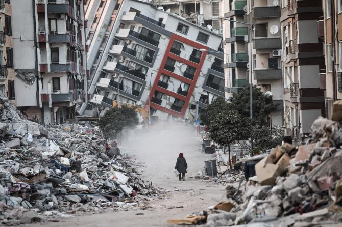

[정의]
지진이란 지구 내부 에너지에 의해 땅이 갈라지거나 흔들리는 현상을 말한다.
[피해]
지진은 규모에 따라 피해가 다르지만, 규모 5.0 이상의 지진부터는 유리창이 깨지는 등 건축물에 피해가 발생하고,
심한 경우 지하송수관, 기둥, 벽 등이 무너질 수 있다.
[대처 요령]
1. 지진 발생 시엔 탁자 등 머리를 보호할 수 있는 구조물 아래 들어가 몸을 보호해야 한다.
2. 낙하물이 없는 탁 트인 공간으로 대피해야 한다.
3. 창문 등 유리 부분에 필름을 붙여 파손을 예방해야 한다.
출처:
국민재난안전포털